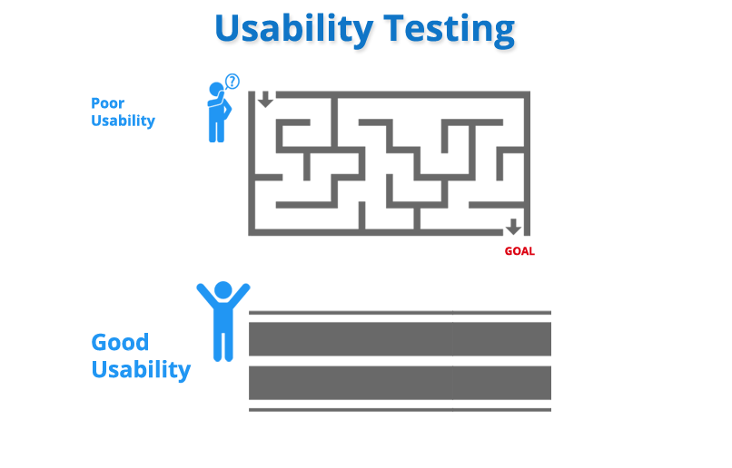

Web usability testing
Majority of the content for usability testingis inspired from the book "Rocket surgery made easy"
Definition:It is a technique that involves performing numerous tasks within the website figuring how usable it is,it usually includes two people
one acting as a user and the other one as the observer.

Image-Source
-
Start as early as you can because testing along with designing eliminates problems easily.
-
Find out websites with the same motive as yours, and test for their usability, you will find some similarities among the two, try to implement good features of their websites into yours and try to avoid the mistakes they made.
-
Find testers who are not afraid to point out the problems with your creativity.
-
Donot settle with just one or two testers, as they already know way too much about the website.
-
If one person does not appreciate it does not mean it's bad,
involve more people, ask them to provide detailed reviews and act on the ones you consider useful.
next → Page 1 of 3